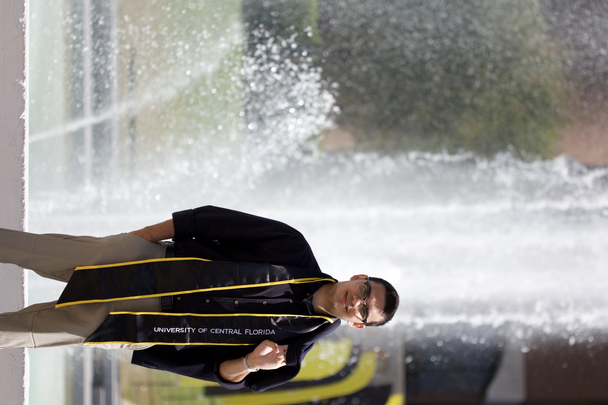

Aden Brady
Infrastructure professional with hands-on experience in virtualization, systems administration, and enterprise IT. Currently supporting the City of Orlando, with prior work on UCF's infrastructure and virtualization team.

Homelab
Projects
About
I've spent the past two years in enterprise infrastructure, first at UCF IT managing VMware environments and supporting Dell server hardware, now at the City of Orlando diagnosing and resolving system issues across the organization. The common thread is hands-on work with the technology that keeps everything running.
Outside of that I maintain a personal homelab to keep learning hands-on, compete in cyber defense with Hack@UCF, and earned the rank of Eagle Scout, an experience that shaped how I approach leadership and community.
Skills
Project Details
Designed and built a home server running TrueNAS CE with RAID-Z1 for redundant storage across multiple drives. Deployed and managed self-hosted services via Docker containers including VaultWarden for password management with user authentication and access controls. Configured secure remote access using Tailscale VPN, enabling encrypted connectivity to all home services without exposing ports to the public internet.
Deployed a Pi-hole DNS sinkhole across 12+ devices, reducing malicious and tracking domain requests by 35%. Configured custom blocklists and regularly analyzed DNS query logs to identify suspicious traffic patterns. Hardened DNS infrastructure by setting Pi-hole as the primary resolver, preventing DNS leaks and enforcing network-wide filtering across all connected devices.
Built a full-stack game tracking web application for a university term project, inspired by MyAnimeList. Users can catalog, rate, and track games across a personalized library. Developed with MongoDB, Express, React, and Node.js, handling environment setup, database configuration, and seed scripting from scratch.
Built an analytics pipeline to process over 3,200 closed VM Request Items (RITMs) from the ServiceNow API. Enriched raw RITM data with task-level details including location, duration, and assignee, then calculated key metrics including average task completion time, task counts, and type breakdowns grouped by hosting location. Outputs structured JSON and generates visual charts for the infrastructure team.
Worked within a VMware vSphere environment managing VM provisioning, patching, and lifecycle tasks across dev/test infrastructure. Responsibilities include Windows Server and Linux administration, Active Directory and Group Policy configuration, Dell server hardware support, and incident tracking via ServiceNow. Maintained technical documentation and internal knowledge base articles.
Experience
Orlando, FL
- Diagnose and resolve hardware and software issues on desktop, laptop, and mobile computer terminals (MCTs); coordinate with service providers for device replacement and re-initialization
- Install and configure advanced enterprise applications including Client Access, Document Imaging, and Tidemark on end-user systems
- Use Systems Management Server (SMS) for remote computer management, control, and problem determination
- Support users with password resets, login issues, and general troubleshooting across City systems
Orlando, FL
- Managed and supported VMware dev/test infrastructure including patching, configuration changes, and VM lifecycle tasks
- Developed and managed VMs for testing Active Directory, Windows Server, and Linux environments
- Supported Dell server hardware including installs, upgrades, monitoring, troubleshooting, and break/fix activities
- Tracked and resolved IT incidents and service requests using ServiceNow with timely documentation and escalation
- Maintained system configuration documentation and created internal knowledge base articles
Orlando, FL
- Competed in the Horse Plinko Cyber Defense Competition, defending Windows and Linux systems against live red-team attacks, placed top 5
- Performed system hardening: credential updates, removal of unauthorized users, service lockdown, and firewall rule implementation
- EXCEL Scholar; coursework includes Network Security, Operating Systems, Database Management, Systems Administration, and Computer Architecture
- Built a full-stack MERN web application as a term project in Web Application Development
- Presented research on IT and cybersecurity applications in space exploration
- Earned the rank of Eagle Scout, the highest achievement in Scouting
- Led a service project for a local greyhound adoption center; mentored junior scouts and led volunteer initiatives
Contact
Open to full-time roles in Systems Engineering, Infrastructure, or IT Operations.